Psikotes dan Brain Assessment Peserta Didik Baru
Pemetaan awal kemampuan, minat, karakter, dan gaya belajar peserta didik baru Tahun Ajaran 2026/2027 sebagai dasar pembelajaran dan layanan BK.
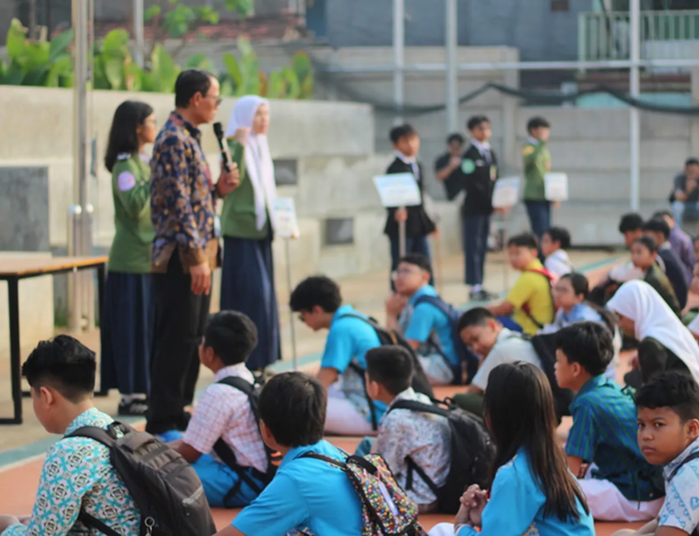
Latar belakang
Setiap anak datang dengan kemampuan kognitif, gaya belajar, minat, bakat, dan kondisi perkembangan yang berbeda. Agar pembelajaran tepat sasaran sejak awal, sekolah perlu memetakan karakteristik dan kebutuhan setiap peserta didik baru.
Psikotes memotret potensi, minat, kepribadian, dan sikap belajar siswa. Brain Assessment melihat pola gelombang otak untuk membantu memahami perilaku dan karakteristik belajar. Hasil keduanya menjadi dasar strategi pembelajaran, layanan konseling, pengembangan potensi, dan penyusunan kelas yang heterogen dan seimbang.
Kegiatan ini bukan penentu diterima atau tidaknya peserta didik, melainkan sarana pemetaan awal agar sekolah dan orang tua memahami kebutuhan ananda lebih dalam.
Tujuan kegiatan
- Mengetahui kemampuan kognitif dan karakteristik peserta didik sebagai dasar pemetaan awal kemampuan belajar.
- Mengidentifikasi potensi, minat, dan bakat agar dapat dikembangkan melalui program sekolah.
- Mengetahui gaya belajar (visual, auditori, kinestetik) untuk mendukung pembelajaran berdiferensiasi.
- Memahami karakteristik perilaku peserta didik melalui Brain Assessment sebagai bahan pendampingan belajar.
- Menjadi dasar penyusunan strategi pembelajaran, layanan konseling, dan pendampingan.
- Membantu menyusun komposisi kelas yang heterogen dan seimbang.
- Menjalin kolaborasi sekolah dan orang tua dalam mendukung perkembangan akademik dan nonakademik.
- Menjadi bahan pertimbangan pengembangan potensi, termasuk program prestasi dan pengembangan bakat.
- Mengidentifikasi kebutuhan pendampingan khusus bila ditemukan kondisi yang perlu perhatian lebih lanjut.
- Mendukung kesiapan peserta didik mengikuti pembelajaran di SMP Labschool Ciracas.
Pelaksanaan
Psikotes · 9 Mei 2026
- Peserta datang pukul 06.30, berkumpul di lapangan basket, lalu mengikuti sambutan kepala sekolah dan wakil kepala sekolah serta pengarahan tim psikolog.
- Pengurus MPK dan ROHIS mengantar peserta ke delapan ruang tes: 7A, 7B, 7C, 7D, 10A, 10B, 10C, dan 10D.
- Setiap ruang dipandu psikolog dan diawasi guru SMP Labschool Ciracas.
- Tes berlangsung pukul 07.30–12.30 dengan istirahat pukul 10.00–10.15.
Jenis tes
- Tes kognitif: penalaran, konsentrasi, daya ingat, dan pemecahan masalah.
- Tes minat: kecenderungan ketertarikan pada bidang akademik dan nonakademik.
- Tes kepribadian: karakter, pengendalian emosi, dan cara bersosialisasi.
- Tes sikap belajar: kebiasaan, motivasi, kedisiplinan, dan kesiapan belajar.
Brain Assessment · 23 Mei 2026
- Sebelum hari pelaksanaan, peserta mengisi Google Form sebagai data awal asesmen.
- Peserta datang sesuai jadwal sesi, menunggu di ruang tunggu, lalu diperiksa bergiliran sekitar 10 menit per siswa oleh tim assessor.
- Peserta laki-laki tidak memakai gel rambut atau pomade karena dapat memengaruhi pemeriksaan.
- Peserta berhijab difasilitasi ruang khusus untuk menjaga kenyamanan dan privasi.
| Sesi | Waktu |
|---|---|
| Sesi 1 | 07.30–09.00 WIB |
| Sesi 2 | 09.00–10.30 WIB |
| Sesi 3 | 10.30–12.00 WIB |
| Istirahat | 12.00–13.00 WIB |
| Sesi 4 | 13.00–14.30 WIB |
Tindak lanjut hasil
Hasil psikotes dan Brain Assessment diolah tim psikolog dan tim assessor menjadi profil serta rekomendasi untuk setiap siswa. Sekolah memakai hasil ini untuk:
- Menyusun komposisi kelas 7 yang heterogen dan seimbang.
- Menyesuaikan metode dan aktivitas pembelajaran dengan gaya belajar siswa (pembelajaran berdiferensiasi).
- Menentukan layanan bimbingan dan konseling serta pendampingan yang dibutuhkan siswa.
- Mengarahkan pengembangan potensi, minat, dan bakat siswa.
- Bahan diskusi bersama orang tua dalam mendampingi perkembangan ananda.
Evaluasi
Psikotes
- Pertegas kepada orang tua bahwa konfirmasi kehadiran paling lambat H-3, dan konfirmasi setelah batas waktu tidak dapat diproses.
- Sosialisasikan jadwal dan batas konfirmasi dengan lebih jelas.
- Minta siswa yang kelasnya dipakai sebagai ruang tes merapikan barang pribadi ke loker sebelum kegiatan.
- Susun mekanisme penjemputan yang lebih terstruktur: alur, titik jemput, dan pihak yang berwenang menjemput.
Brain Assessment
- Tim pelaksana hadir lebih awal agar persiapan teknis dan administrasi optimal.
- Pastikan Wi-Fi dan stop kontak siap sebelum peserta masuk ruangan.
- Siapkan daftar hadir peserta dalam empat rangkap.
- Beri penanda (highlight) pada nomor 6 dan 9 di lembar peserta agar tidak terjadi kesalahan pengisian.
Dokumentasi
Informasi kegiatan
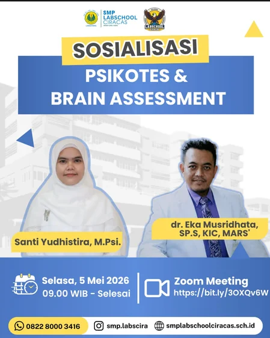
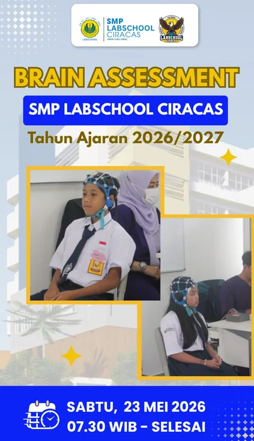
Psikotes
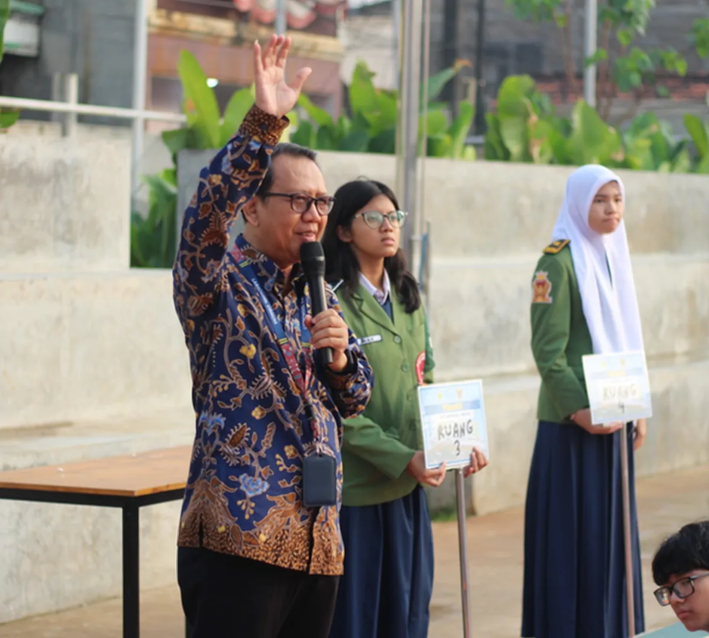
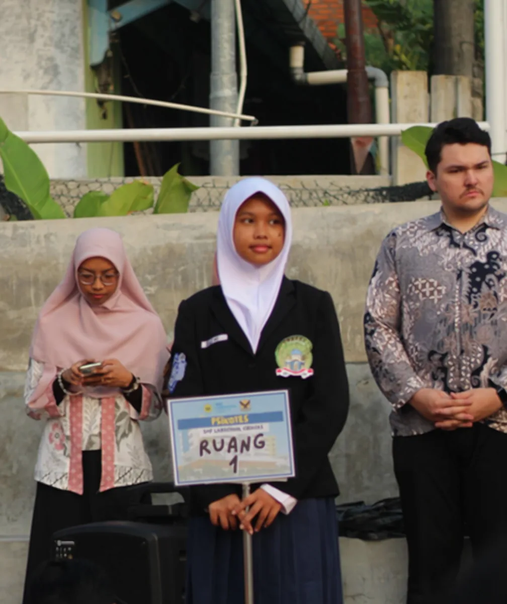
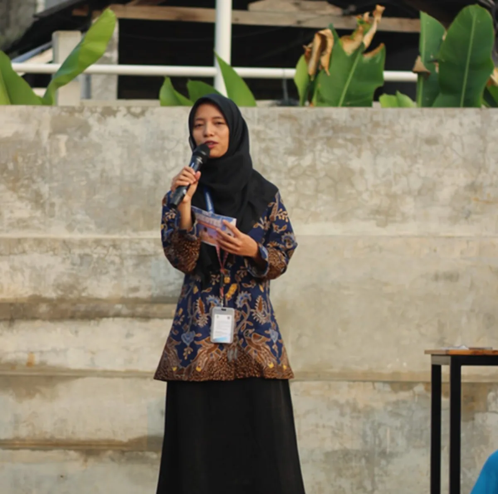
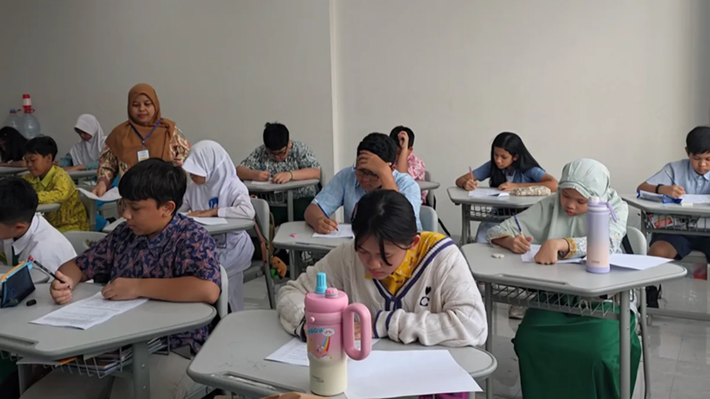
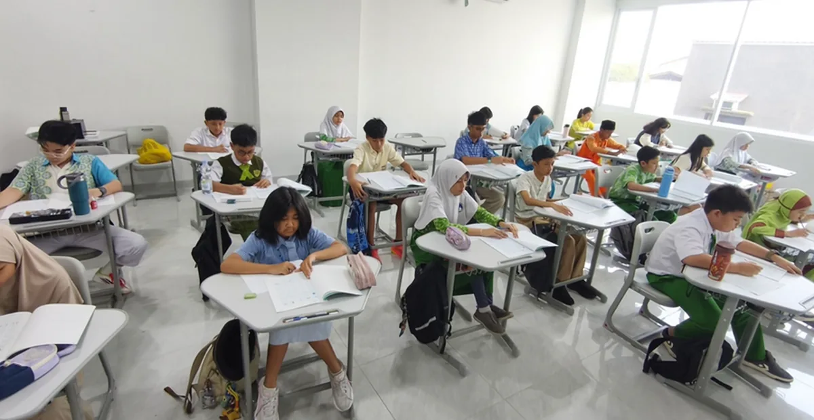
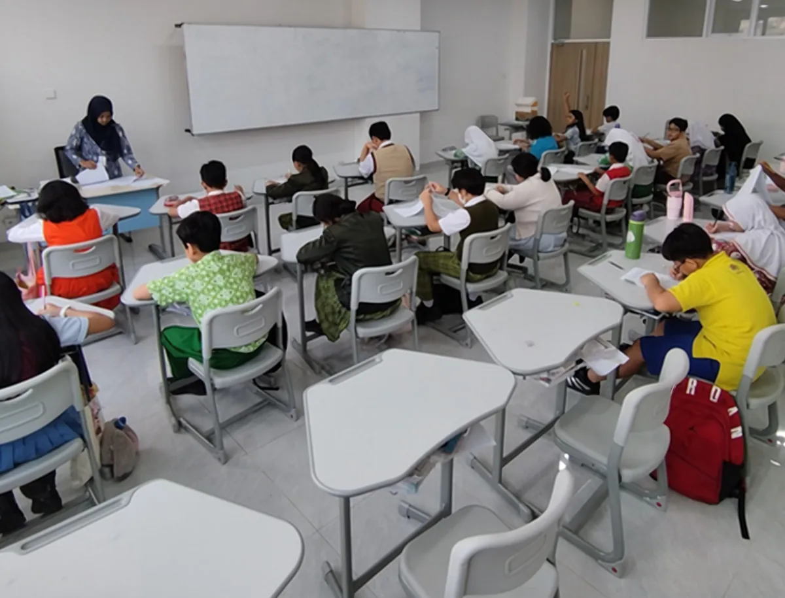
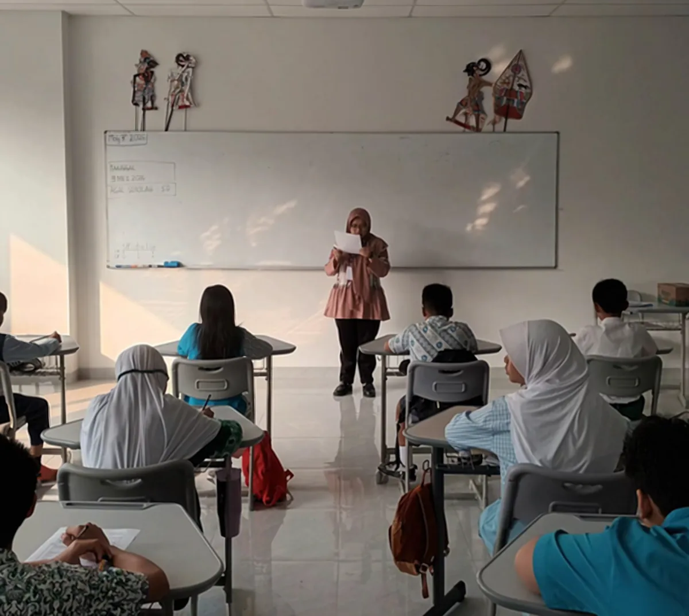
Brain Assessment
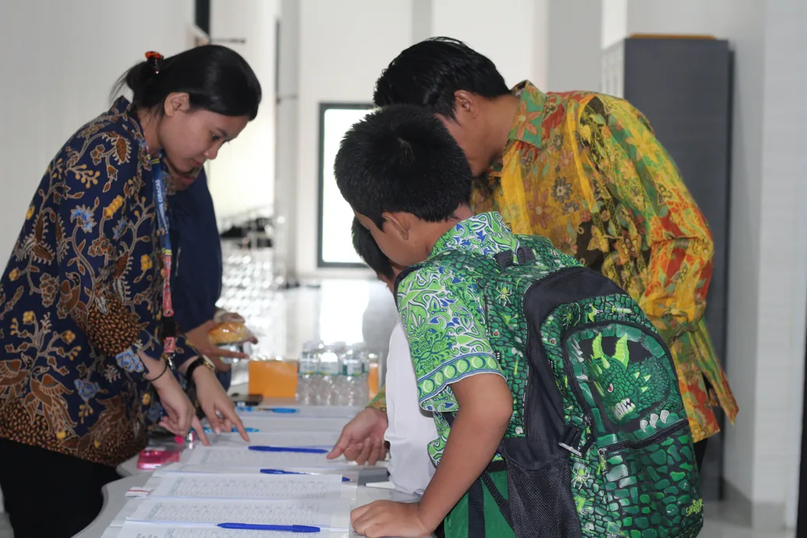
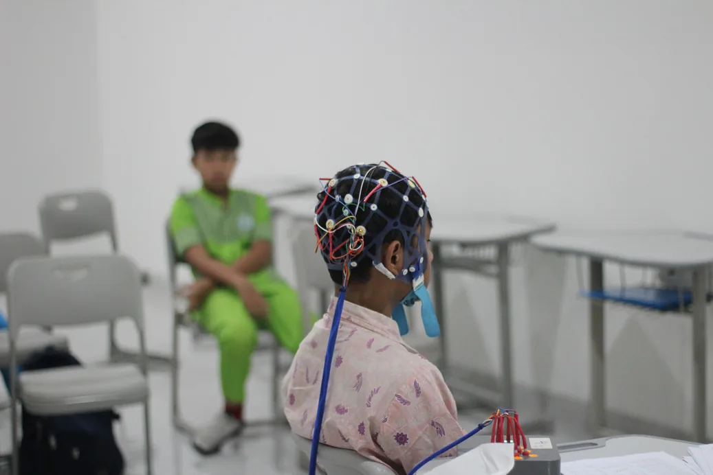
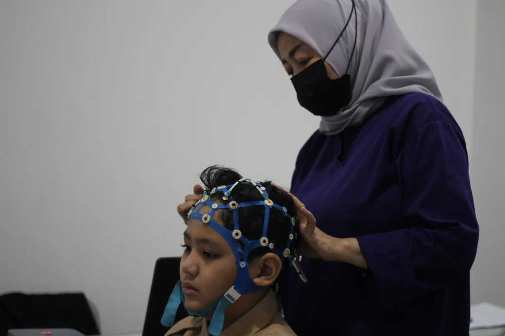
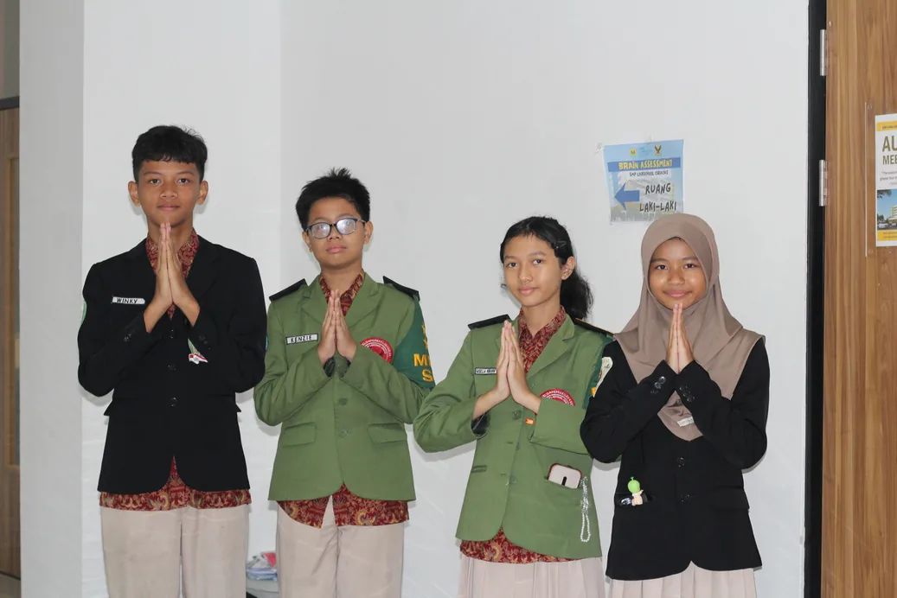
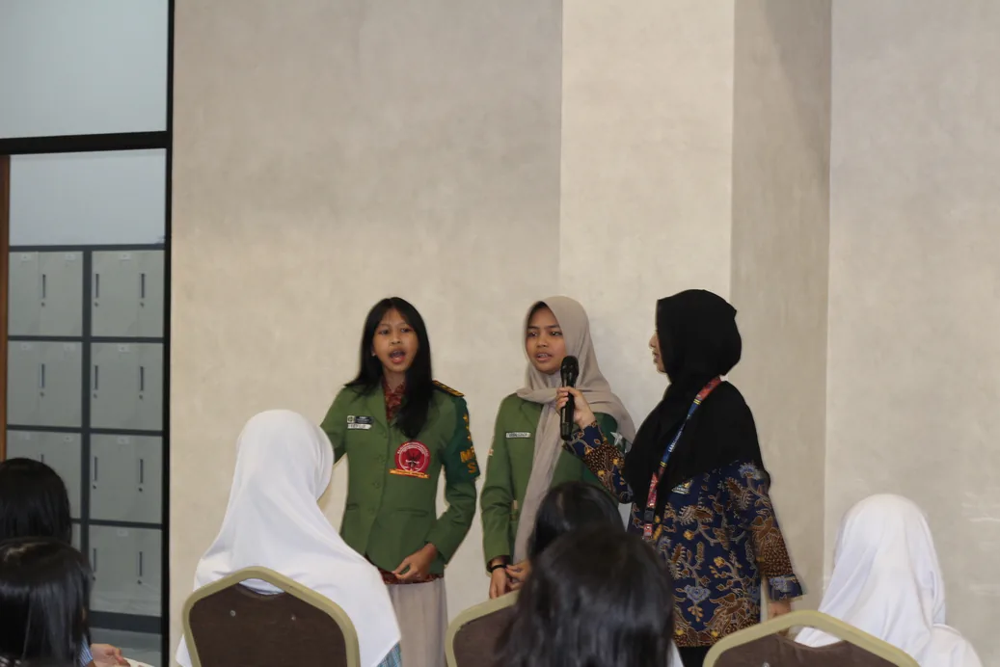
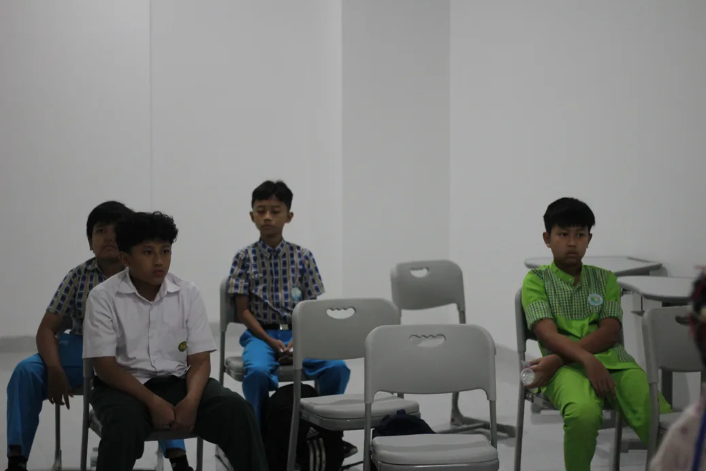